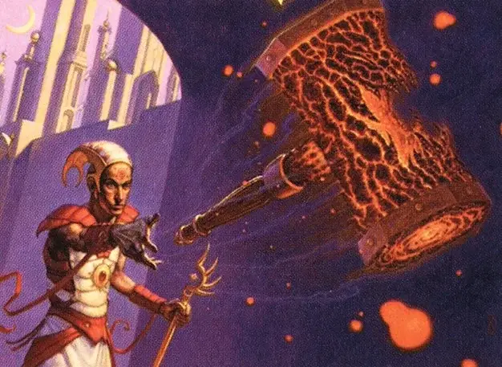

Солнечный молот
Sunforger
Оружие (боевой молот), редкое (требуется настройка)

Рекомендованная стоимость 501-5 000 зм
Вы получаете бонус +2 к броскам атаки и урона, совершённым этим магическим оружием.
Действием вы можете метнуть оружие на расстояние до 120 футов в точку, которую вы можете видеть. Когда молот достигает этой точки, он самоуничтожится, взрываясь, каждое существо в сфере с радиусом 20 футов, центрированной в этой точке, должно совершить спасбросок Ловкости Сл 15, получая 6к6 урона огнём при провале или вдвое меньше урона при успехе. После этого вы можете действием заставить оружие снова появиться в вашей пустой руке. Вы не можете заставить его взорваться снова, пока не закончите короткий или продолжительный отдых.
Если вы не вызываете его обратно в свою руку, то молот появляется в том месте, где он взорвался, когда ваша настройка на него заканчивается или по прошествии 24 часов.